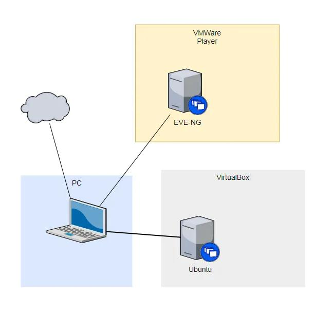
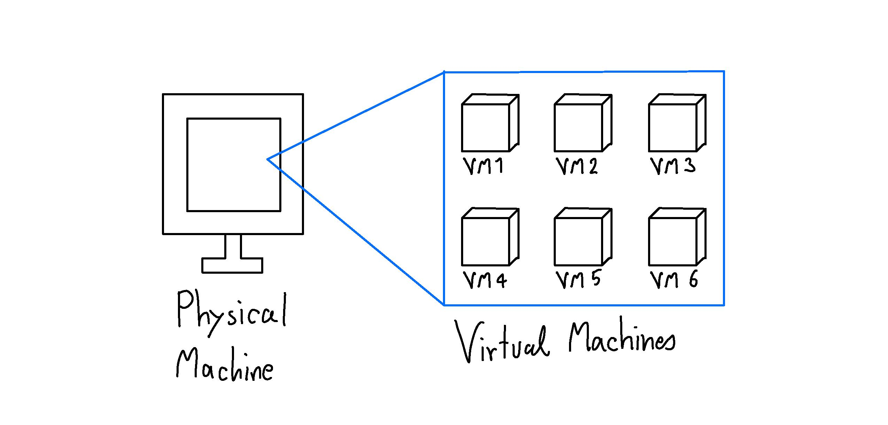

Présentation & Théorie
Installation d'Ubuntu sur une Machine Virtuelle
Comprendre les concepts de base avant de passer à la pratique dans le Lab.
Réalisé par :
• Fadna Lakhouchen
• YOUSSRA Akagou
• Salma Akagou
• Ayoub jlaita
• Yasmine Haddad
• Adnane
C'est quoi Linux ?
Linux est un système d'exploitation libre et open-source. Contrairement à Windows, il n'appartient à aucune entreprise et son code est accessible à tous pour être étudié ou modifié.
Son objectif principal : Offrir une alternative gratuite, hautement sécurisée et extrêmement stable pour faire fonctionner des ordinateurs, des serveurs et des objets connectés.
- Liberté : Utilisation gratuite sans licence payante.
- Pédagogie : Idéal pour comprendre comment fonctionne réellement un système.
- Performance : Très léger et capable de redonner vie à n'importe quel matériel.
C'est quoi une Machine Virtuelle (VM) ?
Une Machine Virtuelle est un logiciel qui simule le comportement d'un ordinateur complet.
Elle utilise les ressources physiques de votre vrai PC (processeur, RAM, disque) pour fonctionner de manière
totalement isolée.
Pour faire fonctionner une VM, on utilise un logiciel appelé Hyperviseur. Voici les deux
principaux :
🟦 VMware
- Type : Propriétaire / Commercial
- Avantage : Très performant, fonctionnalités avancées pour les entreprises.
- Utilisation : Milieux professionnels (VMware Workstation/ESXi).
🟧 VirtualBox
- Type : Gratuit et Open-Source
- Avantage : Facile à utiliser, léger et suffisant pour l'apprentissage.
- Utilisation : Idéal pour les Labs et les étudiants.
Comment fonctionne une VM ?
Ces schémas illustrent comment la virtualisation permet d'isoler le système d'exploitation du matériel physique via l'hyperviseur.

Structure Classique

Structure Virtualisée (VM)
📌 À retenir : L'hyperviseur (comme VMware ou VirtualBox) fait le pont entre votre matériel réel et les systèmes virtuels.
Pourquoi utiliser une VM ?
L'utilisation de machines virtuelles est une pratique standard en informatique. Voici les raisons principales
:
-
Apprentissage sans risque : Vous pouvez tester des commandes dangereuses (comme supprimer
des fichiers système) sans jamais endommager votre vrai ordinateur.
-
Isolation totale : La VM est comme une "boîte fermée". Un virus ou un problème dans la VM
ne touchera pas votre système principal (Windows/Mac).
-
Plusieurs systèmes en même temps : Vous pouvez avoir Windows sur votre PC physique, et
utiliser Linux (Ubuntu) dans une fenêtre comme une simple application.
-
Snapshots (Instantanés) : Vous pouvez sauvegarder l'état exact de la machine à un instant
T, et y revenir en 1 clic si vous faites une erreur.
Ce qu'il faut sur ton PC (Prérequis)
Puisque la machine virtuelle va consommer les ressources de votre vrai PC, il faut s'assurer d'avoir le
minimum syndical pour que Ubuntu fonctionne fluidement.
🧠
Mémoire RAM : Au moins 8 Go de RAM au total sur votre PC (pour pouvoir en donner 2 à 4 Go
à la machine virtuelle).
💾
Espace Disque : Au moins 30 Go d'espace libre sur votre disque dur pour stocker le
système Ubuntu virtuel.
⚙️
Virtualisation du BIOS : La technologie de virtualisation (Intel VT-x ou AMD-V) doit
obligatoirement être activée dans le BIOS de votre ordinateur.
C'est quoi un fichier .ISO ?
Pour installer un système d'exploitation, on télécharge généralement un fichier avec l'extension
.iso.
-
Définition : Un fichier ISO est une "image disque". C'est la copie numérique
exacte du contenu d'un CD ou d'un DVD d'installation.
-
Comment ça marche avec une VM ?
Au lieu de graver ce fichier sur un vrai CD ou de créer une clé USB bootable, on donne simplement ce fichier
directement à VirtualBox.
-
Lecteur virtuel : L'hyperviseur va simuler un lecteur CD et "insérer" ce fichier ISO
virtuellement pour lancer l'installation.
💡 Exemple : Le fichier que nous allons utiliser s'appelle
ubuntu-22.04-desktop-amd64.iso et pèse environ 4.7 Go.
Passage à la pratique dans le Lab
Maintenant que les concepts sont clairs, nous allons passer à la pratique (Le Lab). Vous
allez suivre les étapes avec nous en temps réel.
Ce que nous allons faire ensemble :
- Étape 1 : Téléchargement de VirtualBox et de l'ISO d'Ubuntu 22.04 LTS.
- Étape 2 : Création de la Machine Virtuelle et allocation de la RAM et du disque dur.
- Étape 3 : Lancement de la VM et suivi de l'assistant d'installation Ubuntu pas à pas.
- Étape 4 : Premier démarrage et configuration de l'utilisateur.
Les commandes pour commencer
Une fois Ubuntu installé, nous ouvrirons le Terminal (Ctrl + Alt + T) pour taper nos
premières commandes de base.
ubuntu@vm:~$
sudo apt update && sudo apt upgrade -y
ubuntu@vm:~$ ip a
ubuntu@vm:~$ cd /etc
ubuntu@vm:/etc$ ls -la